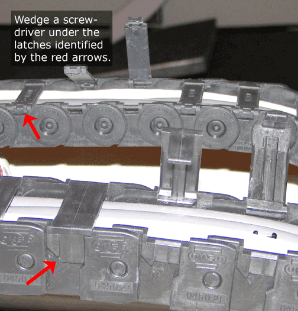
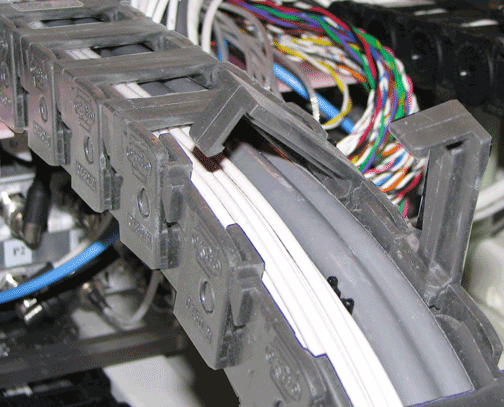

Illustration 2: Releasing Clamps

| NOTE: | Although the side with the thinner clamps can be released by using the screwdriver on the inside or outside of the take-up, to remove the clamps from the side with the wider clamps, wedge the screwdriver in the side that has the take-up vendor's KS logo on it (see Illustration 3). |
Illustration 3: Releasing Wider Clamps
